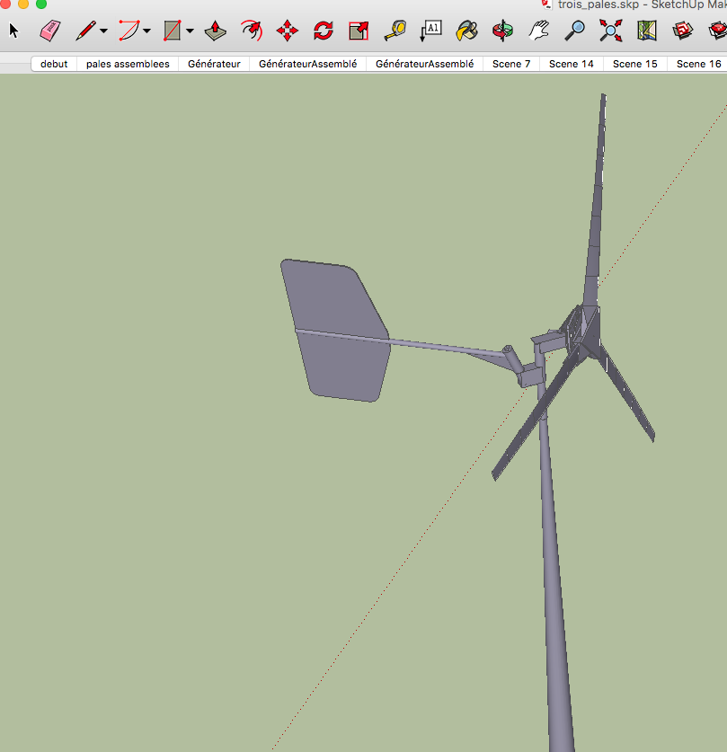
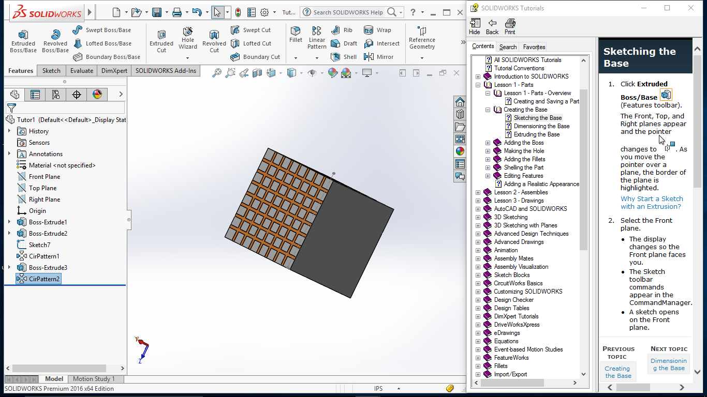
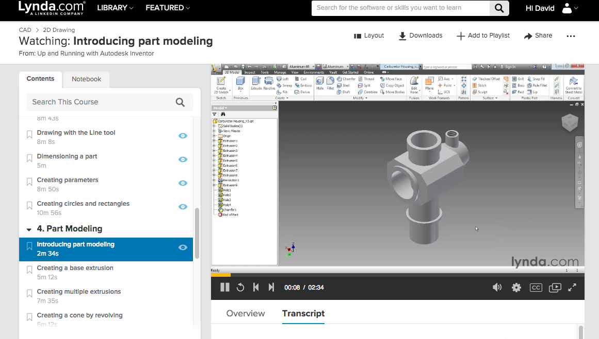
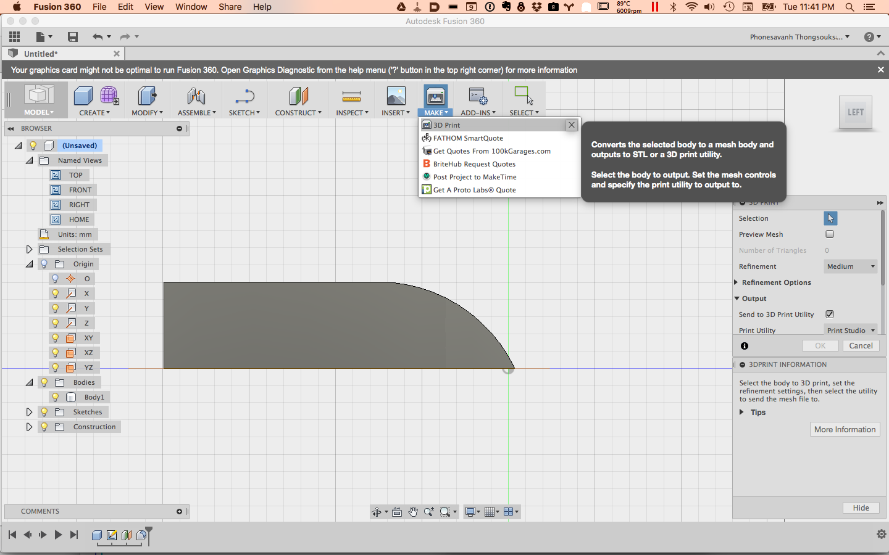

Computer-aided Design
On learning CAD tools
SKETCHUP:
My experience of CAD tools dated from my studies in Graphic design more than 15 years ago. BAck then, we used Maya. I had two course and stopped because I did not know better. I thought it was mostly for drawing cartoons!!! I have not been doodeling with one for a serious project since last year where I had to do a prototype of a micro windmill. The teacher I work with at that time was doing his master degree on windmill and for a fablab pilot project we have created a windmill. We used SketchUp because it was easy to use and intuitive and free to use.

SolidWork
For this week excercice I chose to explore Solidwork, AutoDesk Fusion 360 and Inventor. Since some of the applications was only on Windows, installing it on my BootCamp partition on mac was a good solution for me to avoid traveling with two laptop. Solidwork was only working on Win7, 8.1 or 10. So I have upgraded the Window OS. Bad moove. BootCamp did not like it and became ususable. It took a few hours to reinstall a virtual machine and figure out how to install the education copy on my PC and start working.
Hoppefully, our intern was pretty good with Solidwork and showed me how to draw my cube. I was a lot harder than SketchUp. Most of it because not only, there is way more options and buttons, but I had go from one state to another to be abble to manipulate or add items. Drawing a square is done by clicking the screen twice and not draging, unlike in Adobe Photoshop or Illustrator, software that I use for graphic design work. Bellow are my work! More than 3 hours of work in SolidWork and a few test with Fusion 360 that seems much more intuitive.
AUTODESK Inventor: I am watching a tutorial on Lynda.com and have not yet used it. This application is more than 10GO!!! The most loaded app I have seen yet. Lots of possibilities, I wonder how many hour of work will I need to really make efficiently my prototype in this kind og sofware. I like that some button gives us information on how to use them by keeping the mouse on it, such as the constraints in Sketches. The integrated tutorial in SolidWork was not as intuitive.
Antimony : I was impressed to see how Neil used the application Antimony, I tried and felt like the first time I had to writte Qbasic code in college. Sounds pretty cool to use but not as exciting as it looks. I think I would need more button! The different link also reminds me of the software Max MSP for programming language media. Another very powerfull and complex tool.
Learming SolidWork
 Luckily I have access to Lynda.com site where there is a lot of tutorial on SolidWork. I learned that files are design in tree sequences, part, assembly and drawing. A part is a piece of a whole drawing. A drawing is detail representation of the design wich illustratrate its geometric features and dimensions for one or more views (such as isometric). The purpose is to give enough information that a machinist or manufacture can make the item that I desing. An an assembly is a package of all the part to demonstrate relation within them.  More tutorial on SoliWork web site
Autodesk Fusion 360
I tried it and loved the layout, it seems well designed and visually less overloaded. I made a form and a few extrusions. Here at échofab, Fabrice Traoré was available to show me SolidWor so I spent more time this week exploring it than AutoDesk but I will definily try it more again. 